blue-eyes-idle
Reposo sobre el expositor de Projects
6 cuadros · 80×60 · 6 fps · ciclo
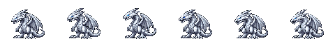

Ver todos los keyframes
blue-eyes-hover
Aleteo mientras flota junto a las cartas
6 cuadros · 80×60 · 10 fps · ciclo
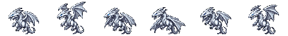

Ver todos los keyframes
boyfriend-idle
Reposo a 100 BPM: un ciclo cada 600 ms
6 cuadros · 96×96 · 10 fps · ciclo
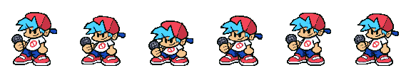

Ver todos los keyframes
boyfriend-up
Flecha up
4 cuadros · 96×96 · 12 fps · una vez
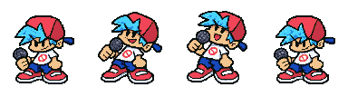

Ver todos los keyframes
boyfriend-down
Flecha down
4 cuadros · 96×96 · 12 fps · una vez
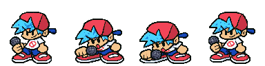

Ver todos los keyframes
boyfriend-left
Flecha left
4 cuadros · 96×96 · 12 fps · una vez
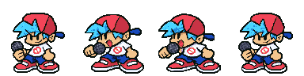

Ver todos los keyframes
boyfriend-right
Flecha right
4 cuadros · 96×96 · 12 fps · una vez
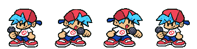

Ver todos los keyframes
springtrap-walk-right
Patrulla hacia la derecha; traslación externa
8 cuadros · 64×80 · 10 fps · ciclo
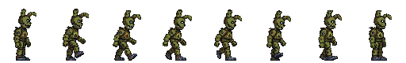

Ver todos los keyframes
springtrap-walk-left
Patrulla hacia la izquierda; reflejo horizontal documentado
8 cuadros · 64×80 · 10 fps · ciclo
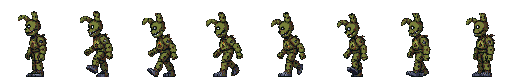

Ver todos los keyframes
springtrap-turn-left
Giro de perfil derecho a izquierdo
4 cuadros · 64×80 · 10 fps · una vez
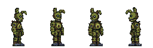

Ver todos los keyframes
springtrap-turn-right
Giro de perfil izquierdo a derecho
4 cuadros · 64×80 · 10 fps · una vez
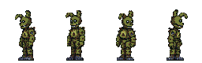

Ver todos los keyframes
springtrap-glitch-left
Pausa y tirón ocasional mirando a la izquierda
4 cuadros · 64×80 · 10 fps · una vez
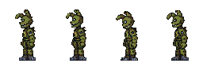

Ver todos los keyframes
springtrap-glitch-right
Pausa y tirón ocasional mirando a la derecha
4 cuadros · 64×80 · 10 fps · una vez
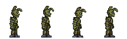

Ver todos los keyframes
p3-butterfly-fly
Vuelo por la ruta del hero; trayectoria externa
8 cuadros · 45×35 · 12 fps · ciclo

Ver todos los keyframes
p3-butterfly-hover
Aleteo corto al detenerse sobre la silueta
4 cuadros · 45×35 · 8 fps · ciclo

Ver todos los keyframes
frisk-idle
Reposo tranquilo en Contact
6 cuadros · 60×75 · 5 fps · ciclo
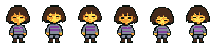

Ver todos los keyframes
frisk-greet
Saludo al entrar a Contact o al enfocar un enlace
6 cuadros · 60×75 · 8 fps · una vez
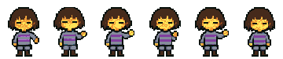

Ver todos los keyframes
yugioh-card-back-still
Reverso real de Yu-Gi-Oh: remolino marrón/naranja; reemplaza el arcano propio
1 cuadros · 118×172 · 0 fps · una vez
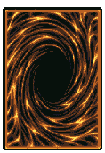

Ver todos los keyframes
blue-eyes-emerge-summon
Blue-Eyes sale de una carta de Yu-Gi-Oh al revelar un proyecto
12 cuadros · 256×256 · 12 fps · una vez
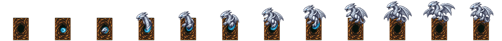